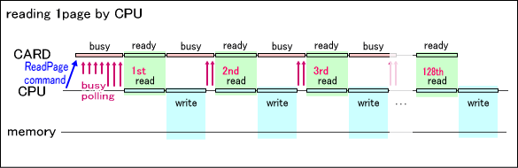
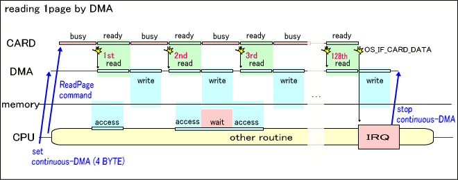

ROMアクセス (overview)
説明
ROMデバイスは、データバスを経由してコマンドを発行することによりメモリ空間へのデータ転送を行うことが可能です。
ROMデバイスに対するデータ転送コマンドの形式と発行後のデバイスの動作は以下のようになります。
- コマンド1回で転送可能なサイズは常に512BYTEです。
また、転送元として指定すべきROMデバイス領域の先頭アドレスは512BYTEの整数倍にアラインメントされている必要があります。
- コマンドを発行した直後、ROMデバイスは一定期間のビジー状態を経て、最初の1ワード(4BYTE)を読み出し可能な状態になります。
この状態変化はIOレジスタのフラグで確認することができ、また、このタイミングをDMA起動要因に指定することもできます。
- 1ワードをIOレジスタからリードするとROMデバイスは再びビジー状態になり、一定期間後には次の1ワードを読み出し可能な状態になります。
このようにIOレジスタから合計128回リードを繰り返して512BYTEのデータ転送が完了すると、
カードデータ転送完了割り込みを示すOS_IE_CARD_DATA割り込み要求フラグが発生します。
- ビジー期間の長さについては、ROMデバイスの種類に依存します。
これら一連の処理はCARDライブラリ関数の内部で実行されるため、アプリケーションが直接この操作を行うことはありません。
また、転送サイズに関する制限もライブラリ内部で解決するため、基本的には考慮する必要はありません。
CPUによるデータ転送
通常のデータ転送処理について説明します。

データ転送コマンドを発行した後、ROMデバイスのビジー状態が解除されるまでIOレジスタのフラグチェックを繰り返します。
ROMデバイスがビジー状態でなくなったらIOレジスタから4BYTEを読み出し、格納先のメモリへ書き込みます。
このビジー解除待ちと4BYTE転送を、合計512BYTEになるまで繰り返し実行します。
通常のデータ転送は、このようにCPU処理で実現されます。
DMAによるデータ転送
DMA転送を使用する場合のデータ転送処理について説明します。

データ転送コマンド発行に先立ち、CARDライブラリがDMAチャンネルを以下の設定で起動しておきます。
- DMA起動モード：カード転送
- 転送元アドレス：IOレジスタ
- 転送先アドレス：データ格納先メモリ
- 転送ビット幅：32ビット
- ワードカウント：1ワード
その後データ転送コマンドを発行すると、ROMデバイスのビジー状態が解除されるたび定期的に単発のDMA転送が発生します。
合計512BYTEのデータ転送が完了すると割り込みが発生し、CARDライブラリは割り込みハンドラ内でDMAを停止します。
このように、DMAを使用した場合はデータ転送期間中に任意のCPU処理を並行することができます。
CPUのメモリアクセスタイミングがDMA転送のタイミングと競合した瞬間だけはDMA転送完了までわずかに待たされることになりますが、
CPUのメモリキャッシュが有効に作用する場面ではその頻度は低くなります。
しかし、単純にデータ転送の所要時間だけを見ると、CPU処理による通常の転送と比べて割り込みハンドラ処理分だけ長くかかることになります。
CPU処理とDMA転送の選択
CARDライブラリはCARD_ReadRom関数およびCARD_ReadRomAsync関数によってデータ転送を実行します。
これらの関数に引数として与えられるDMAチャンネルが有効な値であればDMA転送が、そうでなければCPU処理が選択されます。前述の通り、DMA転送はCPU処理と比べて以下のような長所と短所が存在します。
| 特性 | CPU処理 | DMA転送 |
| 転送開始から完了までの所要時間 | − | 割り込みハンドラの分だけCPU処理よりも長くなる |
| 転送期間中のCPU並列処理 | 不可能 | 可能 (メモリアクセスの競合時を除く) |
これらにより、データ転送以外に並行すべきCPU処理がある場合ではDMA転送のほうが優れ、そうでない場合はCPU処理のほうが適していることがわかります。
前者の例としてはゲーム中のデータ先読み処理など、後者の例としてはゲーム初期化時の大量データ読み出し処理などが考えられます。
ただし、DMA転送を指定しても実際にDMAを使用できるための条件(転送元、転送先、転送サイズ)を全て満たさない限りはCPU処理が選択されます
(この判定はCARDライブラリ内部で自動的に行われます)。
上位ライブラリであるファイルシステムなどを使用する際にはDMA使用可能条件を満たさないことの方が多いので、
DMA転送を確実に有効に利用するためにはアプリケーション側でデータ構成とプログラムを注意深く設計する必要があります。
具体的な注意点についてはCARD_ReadRomAsync関数のリファレンスを参照ください。
参照
CARD関数一覧
履歴
2006/01/06 初版